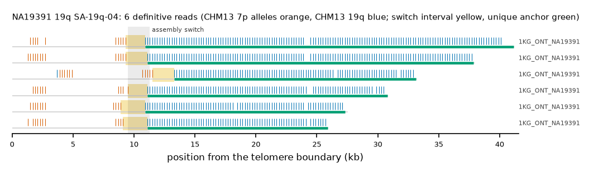

NA19391 19q: SA-19q-04
Claim NA19391|19q|SA-19q-04. All claims
- cohort
- 1000 Genomes ONT
- individual
- NA19391
- haplotype
- hap1
- arm
- 19q
- allele
- SA-19q-04 (foreign)
- model
- donor CHM13 7p, proximal CHM13 19q, recipient CHM13 19q, pattern DP
- claimed end(s)
NA19391#1#CM087798.1#R- assembly switch
- 10,806 bp from the telomere boundary; own-window projection 9500-11300 bp
- v1 verdict
- confirmed (confirmed)
- definitive tier
- definitive
- reads
- 7 conclusive switch-concordant, 0 discordant, 0 contradicting, 1 consistent; 6 definitive (1KG_ONT_NA19391)
- by tier
- definitive:6;conclusive_unique_anchor_off_end:1;consistent:1
- source
- https://ftp.1000genomes.ebi.ac.uk/vol1/ftp/data_collections/1KG_ONT_VIENNA/t2t/NA19391.t2t.cram
- note
- confirmed:robust; keep

Conclusive and contradicting reads (7)
1 further reads are consistent (switch test passed, but no terminal telomere, anchor or integrity); they are
listed in reads.tsv.gz. Switch: 95% interval in subtelomere coordinates (kb from the
telomere boundary) and projected on CHM13 19q. Each samtools command prints the read's record
from its public file (CRAM: add the CHM13 v2.0 FASTA as -T).
| read | dataset | tier | length | switch (subtelomere, kb) | switch on CHM13 | donor units / purity | proximal units / purity | anchor (CHM13, MAPQ, unique) | own-assembly best end | fetch |
|---|---|---|---|---|---|---|---|---|---|---|
15af083a-4873-4ae3-8c56-fb00ff81ce4c | 1KG_ONT_NA19391 | definitive | 47,645 | 9.3-10.9 | chr19:61696075-61697675 | 10 / 1.00 | 145 / 1.00 | chr19:61665700-61696074, 60, 25.4 kb | NA19391#1#CM087798.1#R (97.0%) ✓ | samtoolssamtools view -F 0x900 -T chm13v2.0.fa.gz -X 'https://ftp.1000genomes.ebi.ac.uk/vol1/ftp/data_collections/1KG_ONT_VIENNA/t2t/NA19391.t2t.cram' 'https://ftp.1000genomes.ebi.ac.uk/vol1/ftp/data_collections/1KG_ONT_VIENNA/t2t/NA19391.t2t.cram.crai' 'chr19:61702365-61707364' | awk -v r='15af083a-4873-4ae3-8c56-fb00ff81ce4c' '$1==r' |
40ef2f89-d74d-4ac8-9f74-daf756674322 | 1KG_ONT_NA19391 | definitive | 44,315 | 9.3-11.1 | chr19:61695960-61697760 | 13 / 1.00 | 132 / 1.00 | chr19:61668991-61695957, 60, 22.0 kb | NA19391#1#CM087798.1#R (96.2%) ✓ | samtoolssamtools view -F 0x900 -T chm13v2.0.fa.gz -X 'https://ftp.1000genomes.ebi.ac.uk/vol1/ftp/data_collections/1KG_ONT_VIENNA/t2t/NA19391.t2t.cram' 'https://ftp.1000genomes.ebi.ac.uk/vol1/ftp/data_collections/1KG_ONT_VIENNA/t2t/NA19391.t2t.cram.crai' 'chr19:61702365-61707364' | awk -v r='40ef2f89-d74d-4ac8-9f74-daf756674322' '$1==r' |
f7a1d85a-a302-4f8d-a2b8-ac5d034ef0ff | 1KG_ONT_NA19391 | definitive | 35,891 | 11.5-13.3 | chr19:61695958-61697758 | 12 / 0.92 | 97 / 1.00 | chr19:61676153-61695957, 60, 14.9 kb | NA19391#1#CM087798.1#R (95.6%) ✓ | samtoolssamtools view -F 0x900 -T chm13v2.0.fa.gz -X 'https://ftp.1000genomes.ebi.ac.uk/vol1/ftp/data_collections/1KG_ONT_VIENNA/t2t/NA19391.t2t.cram' 'https://ftp.1000genomes.ebi.ac.uk/vol1/ftp/data_collections/1KG_ONT_VIENNA/t2t/NA19391.t2t.cram.crai' 'chr19:61702365-61707364' | awk -v r='f7a1d85a-a302-4f8d-a2b8-ac5d034ef0ff' '$1==r' |
8e6c2b45-379c-40cf-91ec-8f1373aa8e30 | 1KG_ONT_NA19391 | definitive | 31,167 | 9.5-11.1 | chr19:61696059-61697659 | 10 / 1.00 | 95 / 1.00 | chr19:61676451-61696058, 60, 14.7 kb | NA19391#1#CM087798.1#R (95.7%) ✓ | samtoolssamtools view -F 0x900 -T chm13v2.0.fa.gz -X 'https://ftp.1000genomes.ebi.ac.uk/vol1/ftp/data_collections/1KG_ONT_VIENNA/t2t/NA19391.t2t.cram' 'https://ftp.1000genomes.ebi.ac.uk/vol1/ftp/data_collections/1KG_ONT_VIENNA/t2t/NA19391.t2t.cram.crai' 'chr19:61702365-61707364' | awk -v r='8e6c2b45-379c-40cf-91ec-8f1373aa8e30' '$1==r' |
96af06a7-1182-48d1-b4ca-8bbf69b6d4ed | 1KG_ONT_NA19391 | definitive | 39,654 | 8.9-10.9 | chr19:61695995-61697995 | 11 / 1.00 | 80 / 1.00 | chr19:61679540-61695992, 60, 11.5 kb | NA19391#1#CM087798.1#R (93.8%) ✓ | samtoolssamtools view -F 0x900 -T chm13v2.0.fa.gz -X 'https://ftp.1000genomes.ebi.ac.uk/vol1/ftp/data_collections/1KG_ONT_VIENNA/t2t/NA19391.t2t.cram' 'https://ftp.1000genomes.ebi.ac.uk/vol1/ftp/data_collections/1KG_ONT_VIENNA/t2t/NA19391.t2t.cram.crai' 'chr19:61702365-61707364' | awk -v r='96af06a7-1182-48d1-b4ca-8bbf69b6d4ed' '$1==r' |
74a1d848-fb53-4db3-b7ff-d6ac35a13588 | 1KG_ONT_NA19391 | definitive | 33,192 | 9.1-11.1 | chr19:61695988-61697988 | 11 / 1.00 | 73 / 1.00 | chr19:61681238-61695987, 60, 9.8 kb | NA19391#1#CM087798.1#R (97.6%) ✓ | samtoolssamtools view -F 0x900 -T chm13v2.0.fa.gz -X 'https://ftp.1000genomes.ebi.ac.uk/vol1/ftp/data_collections/1KG_ONT_VIENNA/t2t/NA19391.t2t.cram' 'https://ftp.1000genomes.ebi.ac.uk/vol1/ftp/data_collections/1KG_ONT_VIENNA/t2t/NA19391.t2t.cram.crai' 'chr19:61702365-61707364' | awk -v r='74a1d848-fb53-4db3-b7ff-d6ac35a13588' '$1==r' |
22c67f74-22ba-4f76-aaa0-7ba306a521fc | 1KG_ONT_NA19391 | conclusive, places on another end | 38,866 | 8.7-10.5 | chr19:61696130-61697930 | 10 / 1.00 | 97 / 1.00 | chr19:61676080-61696129, 60, 15.1 kb | NA19391#2#CM087812.1#R (95.4%) (not claimed end) | samtoolssamtools view -F 0x900 -T chm13v2.0.fa.gz -X 'https://ftp.1000genomes.ebi.ac.uk/vol1/ftp/data_collections/1KG_ONT_VIENNA/t2t/NA19391.t2t.cram' 'https://ftp.1000genomes.ebi.ac.uk/vol1/ftp/data_collections/1KG_ONT_VIENNA/t2t/NA19391.t2t.cram.crai' 'chr19:61702365-61707364' | awk -v r='22c67f74-22ba-4f76-aaa0-7ba306a521fc' '$1==r' |
Files
CRAM/BAM on CHM13 v2.0, BAM on the person's own assembly windows and the window FASTA: release asset subtel_read_evidence_v1_1KG_ONT.tar.gz, directory read_evidence_v1/1KG_ONT/NA19391__19q__SA-19q-04/ (downloads).
Re-derive this verdict
git clone https://github.com/jlanej/human-subtelomere-atlas && cd human-subtelomere-atlas
evidence/replicate_claim.sh 'NA19391|19q|SA-19q-04'The script fetches the cited reads from the public source by region and read ID, re-runs the frozen criteria and compares every per-read and claim verdict with this page (details).